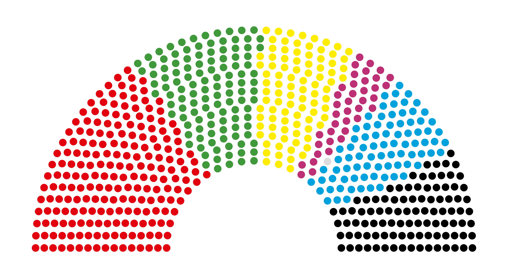
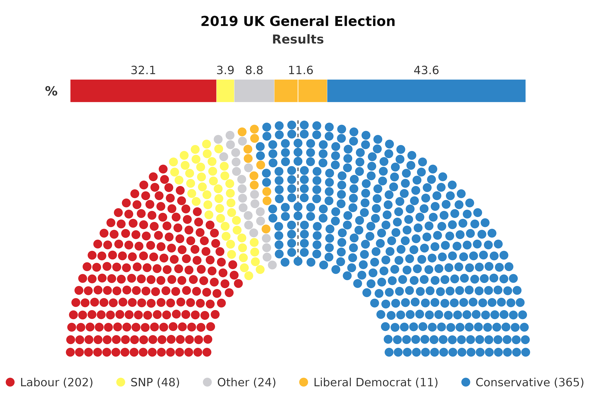
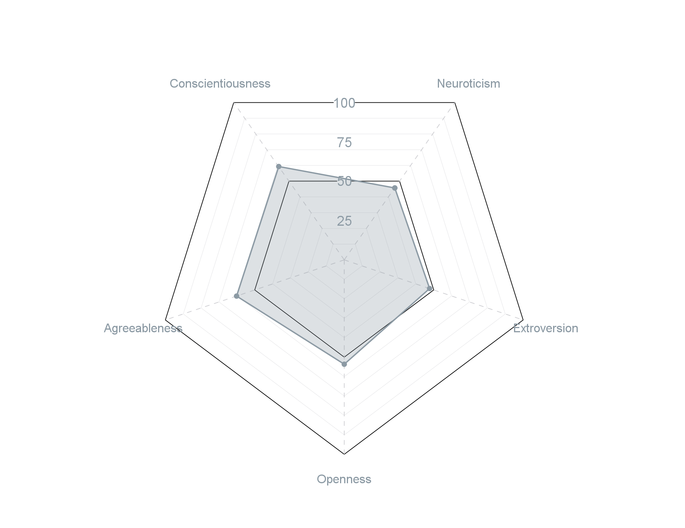
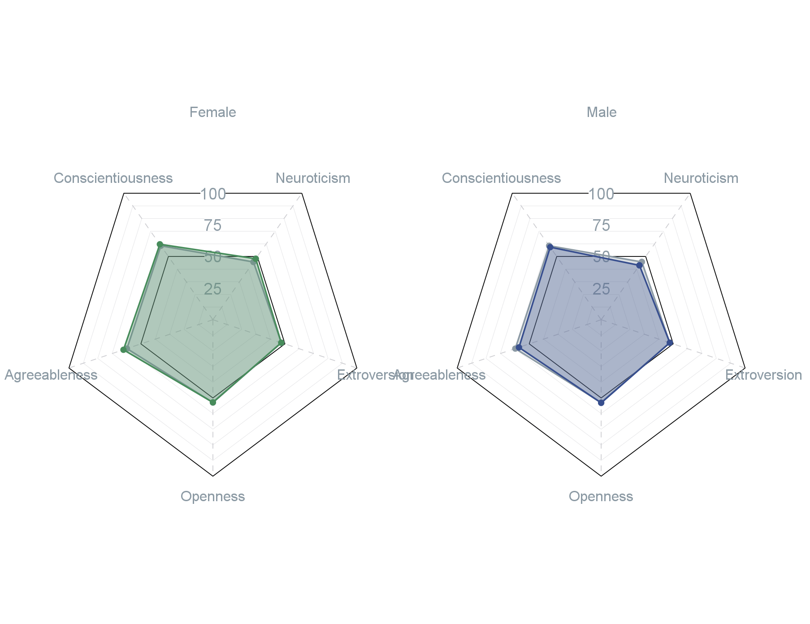
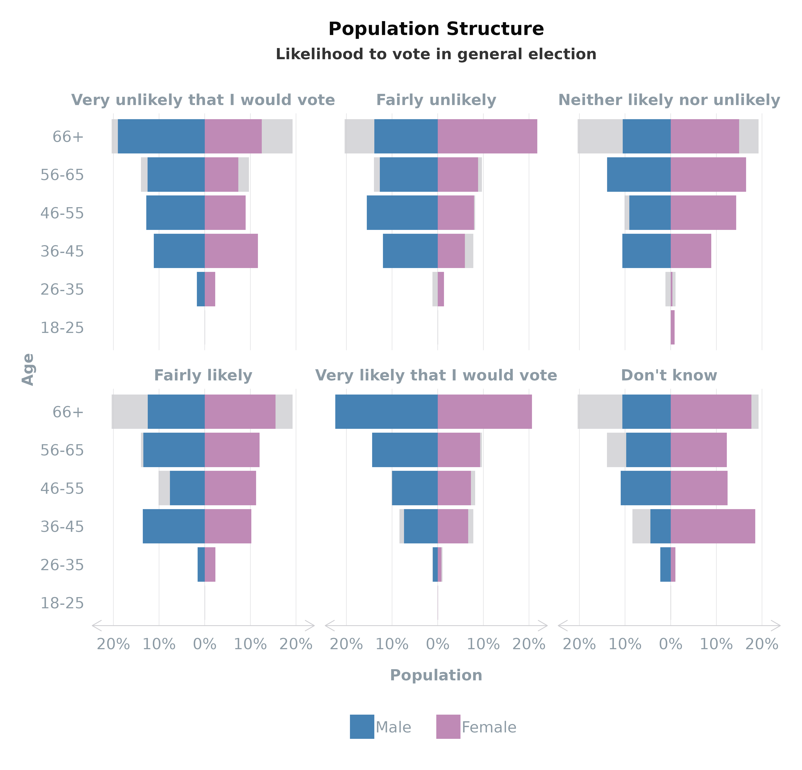
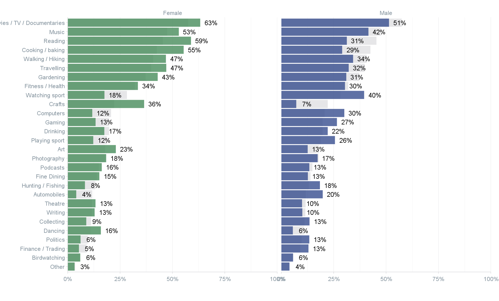

This article demonstrates the powerful visualisation capabilities of
the scgUtils package, offering tools for diverse data
presentations ranging from personality profiles to demographic and flow
analyses.
Sankey Diagram
Flow visualisation helps in understanding how different categories of
respondents transition between various stages or choices. The
plot_sankey() function is instrumental in depicting the
flow of data, especially useful in understanding voting patterns or
changes in preferences over time.
Preparing Data with grp_freq()
Before visualising, prepare your data using grp_freq(),
which aggregates frequencies necessary for the Sankey diagram.
# Subset the required columns from the dataset
sankey_df <- df[, c("wt", "generalElectionVote", "p_past_vote_2019")]
# Get the frequency
sankey_df <- grp_freq(sankey_df,
groups = c("generalElectionVote", "p_past_vote_2019"),
weight = "wt", # optional
round_decimals = 0, # optional
)
head(sankey_df)
# NB. The `dplyr` equivalent is:
# df %>%
# group_by(generalElectionVote, p_past_vote_2019) %>%
# summarise(Freq = sum(wt))| generalElectionVote | p_past_vote_2019 | Freq |
|---|---|---|
| I would/did not vote | Conservative | 75 |
| Conservative | Conservative | 793 |
| Labour | Conservative | 124 |
| Liberal Democrat | Conservative | 50 |
| Scottish National Party (SNP) | Conservative | 2 |
| Plaid Cymru | Conservative | 2 |
Customising the Sankey Diagram
The plot_sankey() function offers extensive
customisation, allowing the diagram to be tailored to specific data
narratives. The colour_prep() function enhances this
customisation by facilitating the assignment of meaningful colours based
on categories like political party affiliations. Such customisation not
only improves the aesthetic appeal of the Sankey diagram but also boosts
its interpretability and effectiveness in conveying complex data
flows.
plot_sankey(sankey_df,
source = "p_past_vote_2019", # on the left side
target = "generalElectionVote", # on the right side
value = "Freq",
units = " votes",
colours = colour_prep(df, c("generalElectionVote", "p_past_vote_2019"), pal_name = "polUK"),
fontSize = 16, # change font size
fontFamily = "Calibri", # default
nodeWidth = 20, # default
nodePadding = 10, # default
margin = list(top = 0, right = 130, bottom = 0, left = 0), # adjust the margin
width = 1200, # default
height = 800, # default
shiftLabel = NULL, # default
heading = "Flow of Votes",
sourceTitle = "2019 Vote",
targetTitle = "VI"
) # %>%
# save from viewer to html
# htmlwidgets::saveWidget(file = "sankey_VI.html", selfcontained = TRUE)Parliament Plot
Understanding the distribution of parliamentary seats among political
parties is crucial for grasping the political landscape. The
plot_parliament() function in scgUtils is
designed to visualise this distribution in a semi-circular parliament
layout. It is particularly useful for illustrating the composition of a
parliament following an election.
Basic Parliament
The basic usage of plot_parliament() involves creating a
plot that shows the number of seats each party holds. This
representation helps in quickly understanding the strength of each party
within the parliament.
# Prepare Data
de_parliament <- data.frame(
Party = c("SPD", "Greens", "FDP", "The Left", "Other", "AfD", "CDU/CSU"),
Result = c(206, 118, 92, 39, 1, 83, 97)
)
# Plot
plot_parliament(de_parliament,
partyCol = "Party",
seatCol = "Result",
colours = c("#e3000f", "#409a3c", "#ffed00", "#be3075", "#dcdcdc", "#00a2de", "black") # optional
)
Adding a Percentage Bar
For a more detailed analysis, plot_parliament() can also
include a percentage bar that shows the popular vote won by each party.
This feature provides additional context to the seat distribution,
reflecting how party popularity translates into parliamentary seats.
# Prepare Data
uk_parliament <- data.frame(
Party = c("Labour", "SNP", "Other", "Liberal Democrat", "Conservative"),
Seats = c(202, 48, 24, 11, 365),
Percentage = c(32.1, 3.9, 8.8, 11.6, 43.6)
)
# Plot
plot_parliament(uk_parliament,
"Party",
"Seats",
"Percentage",
majorityLine = TRUE, # add line down centre
title = "2019 UK General Election", # add title
subtitle = "Results",# add subtitle
size = 4, # increase the size of the points
legend = "bottom", # add legend to bottom
colours = colour_prep(uk_parliament, "Party", "polUK"), # match colours using `colour_prep()`
)
This plot offers an intuitive way to analyse election results,
party strengths, and their representation in the parliament. The
inclusion of a majority line further enhances the plot by delineating
the threshold needed for a majority.
Personality Plot
The plot_bigfive() function returns a ggplot2
chart to help visualise the personality profile of the survey data. This
radar chart is primarily to visualise the Big Five personality traits
(neuroticism, extroversion, openness, agreeableness, and
conscientiousness) but can be amended for other quantitative data types
with a scale between 0 and 100.
# Create single plot using unweighted data
plot_bigfive(dataset,
big_five = c("Neuroticism", "Extroversion", "Openness", "Agreeableness", "Conscientiousness"))
When a group is provided, the function returns faceted plots with the variables within the group plotted on top of the average. This provides an easy comparison between the variable and the rest of the cohort in the survey.
# Create faceted plot using age groups and weighted data
plot_bigfive(dataset,
big_five = c("Neuroticism", "Extroversion", "Openness", "Agreeableness", "Conscientiousness"),
group = "Gender",
weight = "wgtvar")
Population Plot
Understanding demographic distribution is vital in survey analysis.
plot_popn() creates visual representations of population
profiles.
Using plot_popn
The plot_popn() function is designed to visualise the
population structure of your survey respondents. It creates a population
pyramid showing distributions across gender and age groups. If a
variable like average age (meanVar) is specified, the plot
can also display this information, adding another layer of insight into
the demographic composition.
plot_popn(data = df,
xVar = "gender",
yVar = "ageGroup",
weight = "wt", # optional
meanVar = "age", # optional (must be numeric)
addLabels = TRUE # to add % labels
)Faceting by Group
Enhance your population pyramid by faceting the
plot_popn plot by a specific group, such as voter turnout.
This feature overlays the selected group’s data onto the total
population structure, providing a comparative view that highlights
differences or similarities within subgroups.
plot_popn(data = df,
xVar = "gender",
yVar = "ageGroup",
group = "turnoutUKGeneral",
weight = "wt", # optional
addLabels = TRUE # to add % labels
)
Binary Plot
The plot_binary() function visualises binary survey
responses (e.g., “Yes” vs “No”). It is particularly effective for
comparative analysis. This function utilises the
grid_vars() function to help transform the data into the
correct format.
# Create list
vars <- list(Q1a = "Art",
Q1b = "Automobiles",
Q1c = "Birdwatching"
# ...
)
# Create plot
plot_binary(dataset,
vars = vars,
group = "gender",
weight = "wgtvar",
return_var = "Yes")
Parliament Plots
Future updates to scgUtils will introduce Parliament
plots, further expanding the package’s visualisation capabilities.